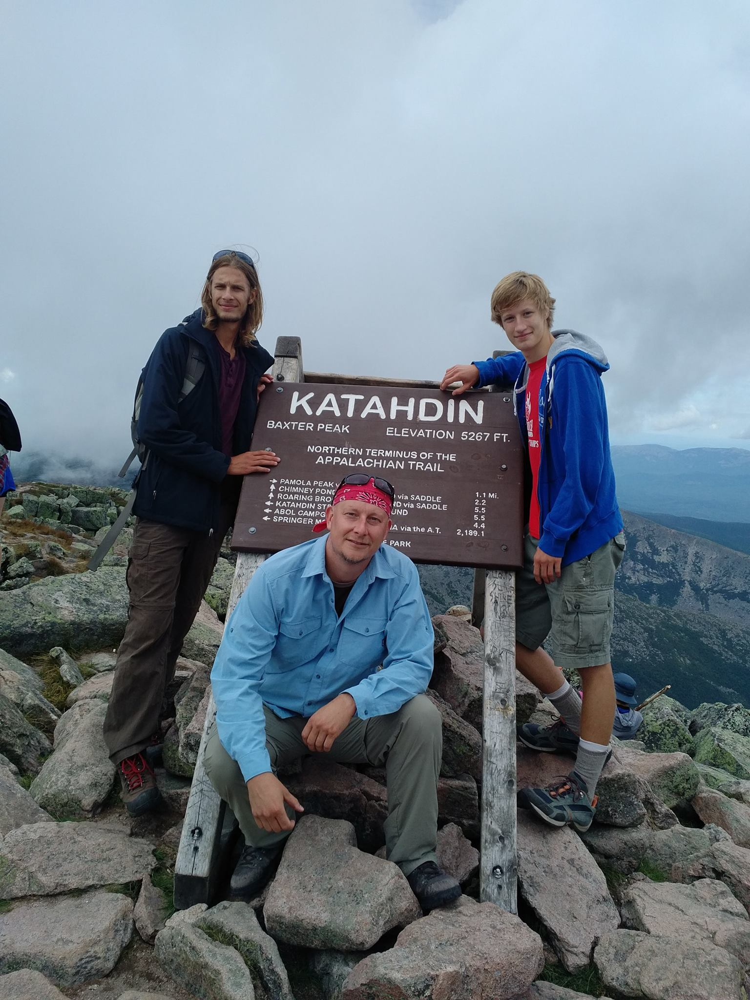

Have you tried turning it off and back on again?
Since I have a passion for electronics I have been tinkering with electronics ever since I build a Windows XP computer with my grandfather 10 years ago. This has lead me to not only spend a year working at Minto Computers as a Device Repair Specialist, but also to spend much of my time working with computers, both hardware and software. I am also currently enrolled in a Network Engineering class. Because of all this I have amassed a huge amount of skills related to technology. These skills include, but are not limited to:
Currently enrolled in
Computer Systems Technology - Network Engineering and Security at Mohawk College
Graduated Grade 12 from Norwell D.S.S.
 One of the things that I am interested in and passionate about is the great outdoors. I have gone on many overnight camping and canoe trips throughout the Provincial Parks of Ontario. I have also gone on a few mountain adventures including climbing:
Like most young men I enjoy playing video games. Some of my favorite game include: Witcher 3, Star Wars: Jedi Academy, Halo 5, Destiny, Fallout: New Vegas and Half-Life 3.
Due to my passion of working with electronics I always have something tech related on the go, be it building a website, running custom home internet, coding projects, and building computers.
John de Gelder
Facebook
johnedegelder@gmail.com